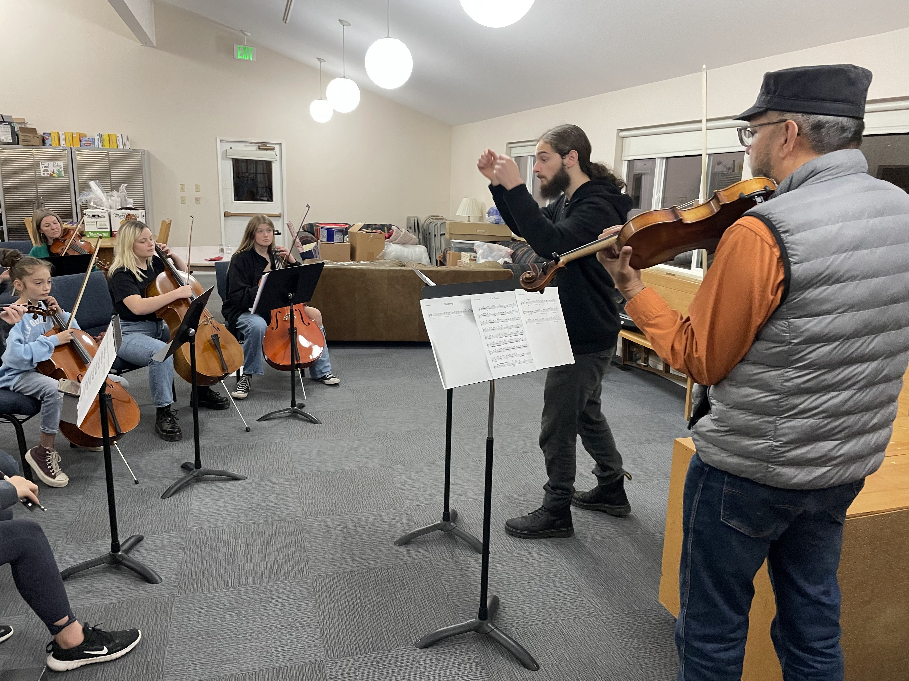

As a music educator, my specialty is in the realm of creativity. Since learning guitar at age 12, it has been my tendency to reorganize the things I was learning in ways novel and interesting to myself. This tendency has proven intense enough for me to pursue it consistently for the proceeding 11 years—earning an undergraduate degree is music (with a focus in composition) and associating with musicians whose areas of expertise range from classical, to metal, to folk, to jazz.
In short: It is my vocation.
My primary goal is to facilitate creative development of the student, regardless of their preferred instrument, age, or background. Lessons typically consist of conversations aimed at navigating the student's inner world in search of ideas that inspire and motivate the labor required to create a piece of music. Once inspiration is found, I provide the student with a method to concretize the idea, and assist them in their creative work. The final step is to in some way record the student's work. I believe in being known by your fruits, and I consider it extremely important for creative development to have something to show at every step of the way.
In addition to this, I am proficient in and can teach technique for the following instruments:
Contact my professional email (maxdawes73@gmail.com) and let me know what the student wishes to learn, as well as any scheduling constraints. My price baseline is $70 per hour-long lesson.